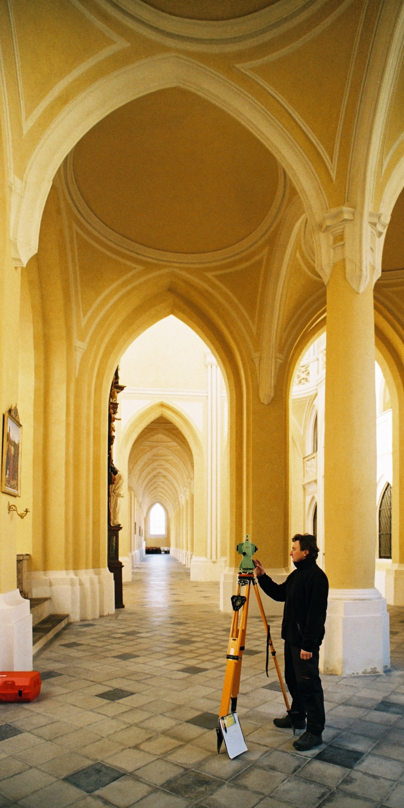

Projekty
Mezi naše práce patří například:
- Dokumentace skutečného stavu řady stavebních objektů v Berlíně, Warnemünde, Drážďanech i jinde v Německu pro přední německé architektonické ateliéry
- Chrám svaté Kateřiny Alexandrijské na Novém Městě pražském, dokumentace stávajícího stavu
- Hrad Karlštejn, veškeré geodetické práce mezi lety 1999 a 2016 pro rekonstrukci stropů a další stavební práce. Fotogrammetrická dokumentace gotických nástěnných maleb.
- Areál zámku Veltrusy, geodetické práce po povodni v roce 2002, účelové mapy, dokumentace stávajícího stavu jednotlivých objektů, sledování výškových deformací atd.
- Hrad Krakovec, dokumentace stávajícího stavu, restaurátorský průzkum kleneb
- Hrad Točník, geodetické a fotogrammetrické práce pro rekonstrukci Královského paláce a dalších objektů
- Malostranská beseda, veškeré geodetické práce spojené s obnovením věží
- Mladotovský palác (Faustův dům) v Praze, dokumentace stávajícího stavu
- Poutní kostel svatého Jana Nepomuckého na Zelené hoře, Žďár nad Sázavou, kompletní dokumentace stávajícího stavu, dokumentace restaurátorského průzkumu a práce spojené s rekonstrukcí výzdoby klenby hlavní lodi kostela
- Kostel Všech svatých s kostnicí, Kutná Hora – Sedlec, Dokumentace stávajícího stavu památky, dokumentace restaurátorských nálezů, spolupráce se stavbou
Fotografie: Kostel Nanebevzetí Panny Marie a svatého Jana Křtitele, Kurná
Hora-Sedlec
